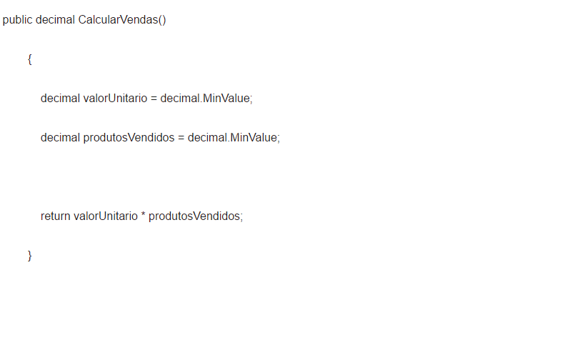
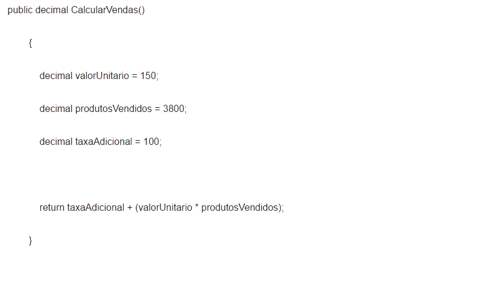

INTRODUÇÃO
Polimorfismo
O Polimorfismo é um mecanismo por meio do qual selecionamos as funcionalidades utilizadas de forma dinâmica por um programa no decorrer de sua execução.Com o Polimorfismo, os mesmos atributos e objetos podem ser utilizados em objetos distintos, porém, com implementações lógicas diferentes. Por exemplo: podemos assumir que uma bola de futebol e uma camisa da seleção brasileira são artigos esportivos, mais que o cálculo deles em uma venda é calculado de formas diferentes.Outro exemplo: podemos dizer que uma classe chamada Vendedor e outra chamada Diretor podem ter como base uma classe chamada Pessoa, com um método chamado CalcularVendas. Se este método (definido na classe base) se comportar de maneira diferente para as chamadas feitas a partir de uma instância de Vendedor e para as chamadas feitas a partir de uma instância de Diretor, ele será considerado um método polimórfico, ou seja, um método de várias formas.
Assim podemos ter na classe base o método CalcularVendas:

Na classe Vendedor temos o mesmo método, mais com a codificação diferente:

O mesmo ocorre na classe Diretor:

Assim temos um mesmo método, com diferentes formas.